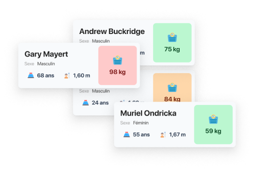
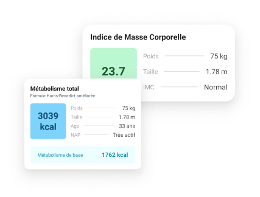
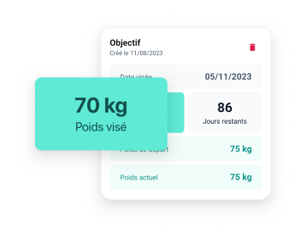

C’est tout de même plus facile de savoir où vous en êtes
dans votre suivi lorsque tous vos contacts sont dans votre poche. Cela fait combien de temps que vous n’avez pas contacté Gary ?

📊
Des calculs instantanés
Mettez à jour les données de vos clients au fur et à mesure et gardez un oeil sur l’évolution des résultats : IMC, Métabolisme... Vous avez accès facilement à l’historique.

🎯
Un oeil sur les objectifs en cours
Déterminez avec vos clients les objectifs à viser. Ils doivent les atteindre, et vous êtes là pour le leur rappeler 💪

Et bien d’autres avantages à venir...
D’autres fonctionnalités sont à venir pour être plus proche de vos clients et vous permettre de propulser votre activité de suivi nutritionnel
Profitez de la version test gratuitement.
Re-découvrez comment gérer votre activité de suivi nutritionnel.